Introduction and motivation
Some more background information in the blog post link.
During embryonic development of Caenorhabditis elegans, an endomesodermal precursor EMS cell develops into a mesoderm precursor MS cell and and endoderm precursor E cell (Sulston et al. 1983). The asymmetry of this division depends on signals coming from the neighbour of EMS cell, P2 (Jan and Jan 1998). When the signals coming from the neighbouring cell are lost, EMS cell divides symmetrically and both daughters adopt MS cell fate (Goldstein 1992). Since cell signalling can be modulated, C. elegans EMS cell is a good system to use when investigating asymmetric cell divisions. Indeed, preliminary studies show that the volume of the daughter closest to the P2 (signal-sending cell) becomes larger when the signal is abolished. We do not know, however, how the cell shape changes, and whether the daughter cell fate is mediated by the EMS and the daughter cell shape. One way to investigate this is to do direct volume analysis of the EMS cell before division, however, this approach is limiting since volume does not account for changes in the cell shape. With this project, I hope to develop a framework to investigate EMS, MS, and E cell shapes and use this framework to analyze cell shapes upon signal perturbations.
A paper published in 2024 claims to have developed a framework to analyze cell shape in C. elegans embryonic cells (Van Bavel, Thiels, and Jelier 2023). To confirm the viability of this framework, the authors compared the shape of a wild type E cell versus an E cell that does not receive a signal from P2 cell (dsh-2/mig-5 knockdown). To analyze the shapes, the authors used conformal mapping to map the cell shapes onto a sphere. They then extracted spherical harmonics which can describe the features of the cell in decreasing importance order from the ones that have the greatest contribution to the cell shape. In this project, my aim was to reproduce their results and to use the Flowshape framework on my own samples.
Segmentation
The pipeline of this framework begins with segmentation. In the article, SDT-PICS method (Thiels et al. 2021) was used to generate 3D meshes. The method was installed using Docker, but it required substantial version control to make it work, as the instalation depended on Linux, some dependencies were not compatible with their recommended Python version, and others were not compatible with a different Python version. I hope to contact the authors of the paper and submit the fixes for installing SDT-PICS. Additionally, the segmentation pipeline did not work very well with my microscopy images (Figure 1). This could be due to different cell shape markers or microscopy differences.
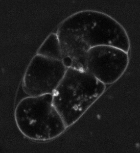
After trying numerous segmentation techniques I have settled for a semi-automatic segmentation of specific cells using ImageJ. This was done using automatic interpolation of selected cells, creating binary masks (Figure 2). These were used as sample cells for further analysis.
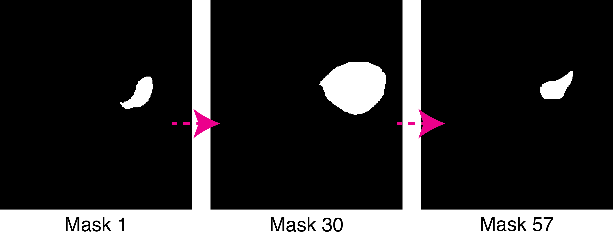
Flowshape algorithm
Meshing from image files
The main Flowshape algorithm uses 3D meshes as input for conformal mapping. However, they do provide a method to build meshes from image files using a marching cubes algorithm (Lorensen and Cline 1987). Marching cubes algorithm leads to a cylindrical 3D representation of a cell (Figure 3).
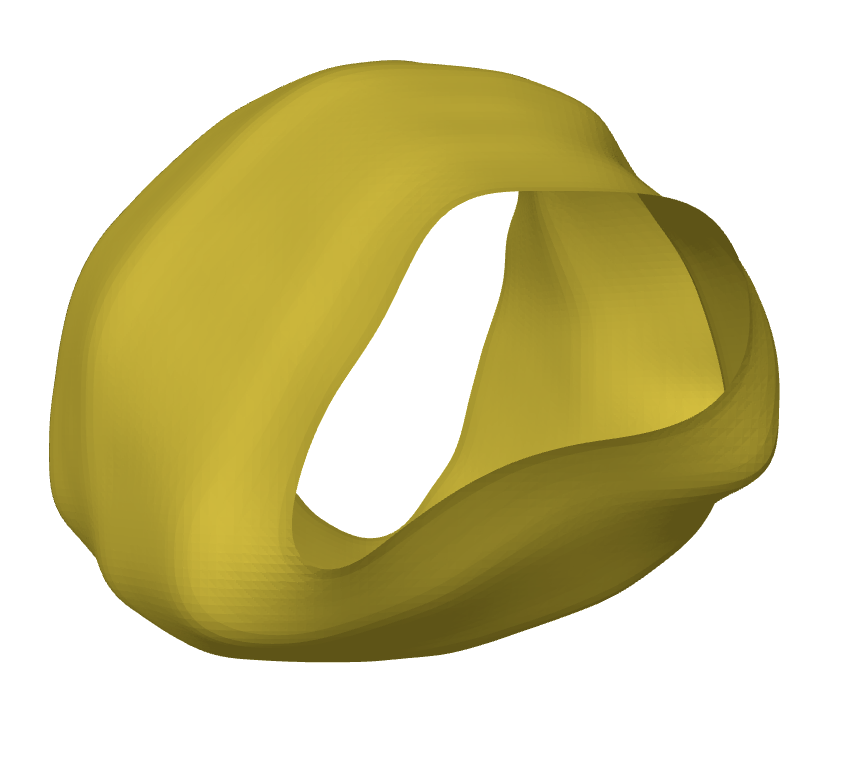
To remove any gaps in the shape, we employ a remeshing algorithm in pyvista package. This leads to an expected triangular mesh (Figure 4). The holes produced by the marching cubes algorithm are filled and the shape is ready to be analyzed.
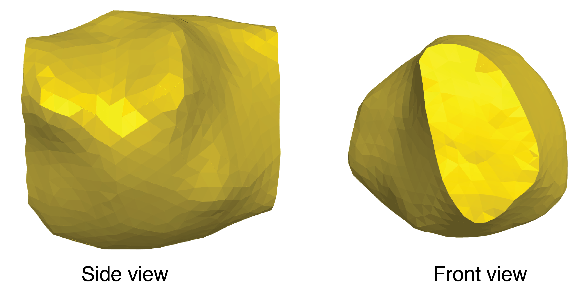
Spherical harmonics can then be calculated using the following code.
```{python}
# perform reconstruction with 24 SH
weights, Y_mat, vs = fs.do_mapping(v, f, l_max = 24)
rho = Y_mat.dot(weights)
reconstruct = fs.reconstruct_shape(sv, f, rho )
meshplot.plot(reconstruct, f, c = rho)
```This results in a reconstructed cell shape (Figure 5). The colors here represent the curvature of the shape.
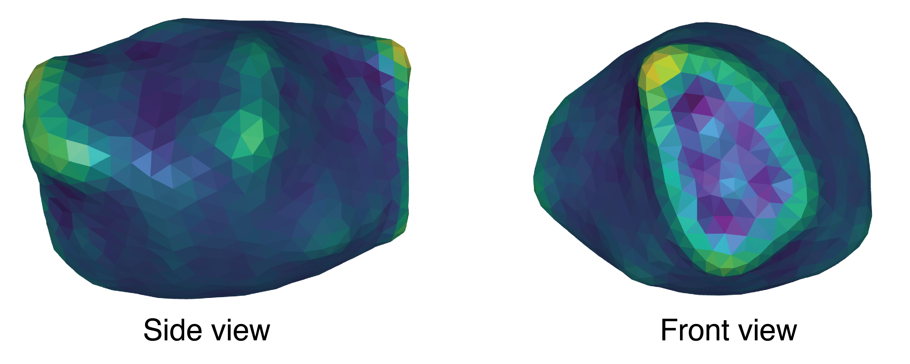
Spherical harmonics can also be used to map the shape directly onto the sphere. Similar to Figure 5, high curvature areas are represented in brighter colors.
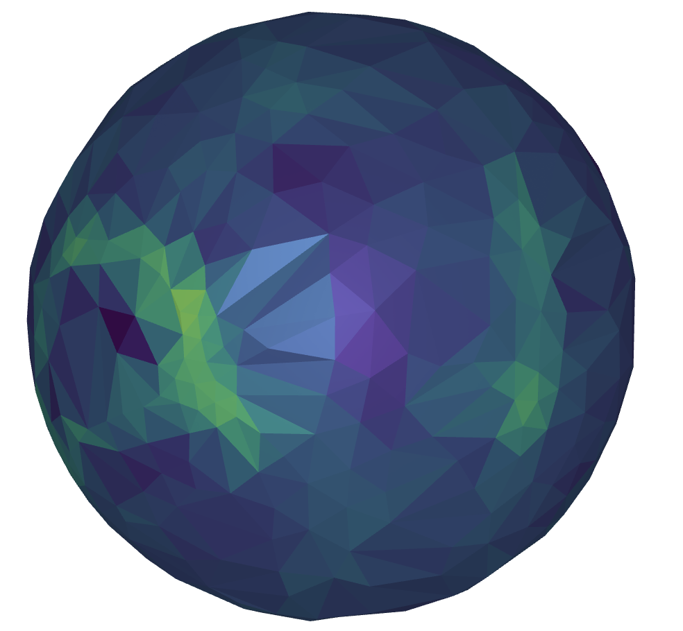
Aligning shapes
To compare two shapes, it is essential to first align them. In this workflow, alignment is calculating by estimating a rotation matrix that maximizes the correlation between the spherical harmonics of two shapes. This is then used to align the shapes and refine the alignment (Figure 7)
```{python}
rot2 = fs.compute_max_correlation(weights3, weights2, l_max = 24)
rot2 = rot2.as_matrix()
p = mp.plot(v, f)
p.add_points(v2 @ rot2, shading={"point_size": 0.2})
final = v2 @ rot2
for i in range(10):
# Project points onto surface of original mesh
sqrD, I, proj = igl.point_mesh_squared_distance(final, v, f)
# Print error (RMSE)
print(np.sqrt(np.average(sqrD)))
# igl's procrustes complains if you don't give the mesh in Fortran index order
final = final.copy(order='f')
proj = proj.copy(order='f')
# Align points to their projection
s, R, t = igl.procrustes(final, proj, include_scaling = True, include_reflections = False)
# Apply the transformation
final = (final * s).dot(R) + t -->
```In this image, the yellow shape and red dots represent two separate E cells. Fewer red dots mean that cells are better aligned.
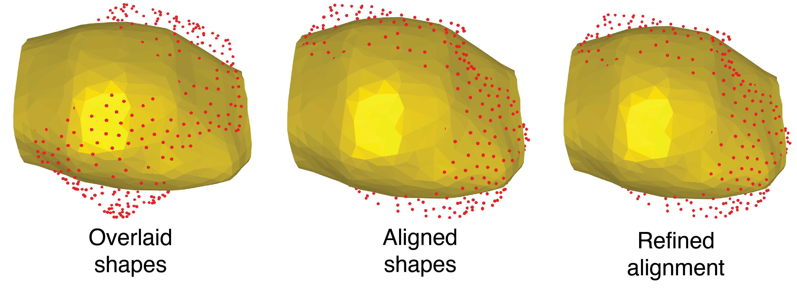
Mean shape
To find a mean shape between the two shapes, I found a mean spherical harmonics decomposition:
```{python}
weights, Y_mat, vs = fs.do_mapping(v,f, l_max = 24)
weights2, Y_mat2, vs2 = fs.do_mapping(v2, f2, l_max = 24)
mean_weights = (weights + weights2) / 2
mean_Ymat = (Y_mat + Y_mat2)/2
sv = fs.sphere_map(v, f)
rho3 = mean_Ymat.dot(mean_weights)
mp.plot(sv, f, c = rho3)
rec2 = fs.reconstruct_shape(sv, f, rho3)
mp.plot(rec2,f, c = rho3)
```From this, I built a mean shape on the sphere, followed by a reconstruction (Figure 8)
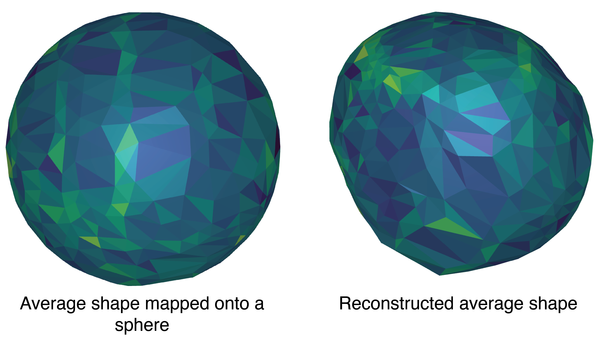
This reconstruction was then used to re-align the original shapes and map them onto the average shape (Figure 9)
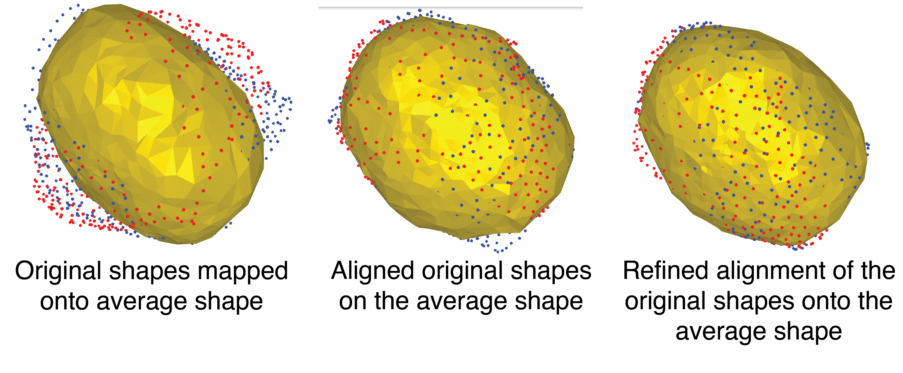
To further analyze the differences between the two cells, I have calculated pointwise differences between vertices, and the combined deviation of each vertex from the average vertex. I then mapped these onto the average cell shape (Figure 10)
```{python}
pointwise_diff = np.linalg.norm(final - final2, axis=1) # Difference between aligned shapes
# Point-wise difference from the mean shape
diff_from_mean_v = np.linalg.norm(final - v3, axis=1)
diff_from_mean_final = np.linalg.norm(final2 - v3, axis=1)
```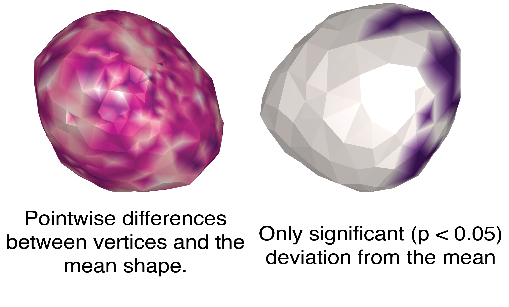
To numerically estimate the shape differences, I have calculated the RMSE between shapes (1.37) and surface area difference between the cells (557.5µm2). These numbers might make more sense after sufficient data to compare between different samples.
I also tried using K-means clustering to see if there were any significant clusters (Figure 11)
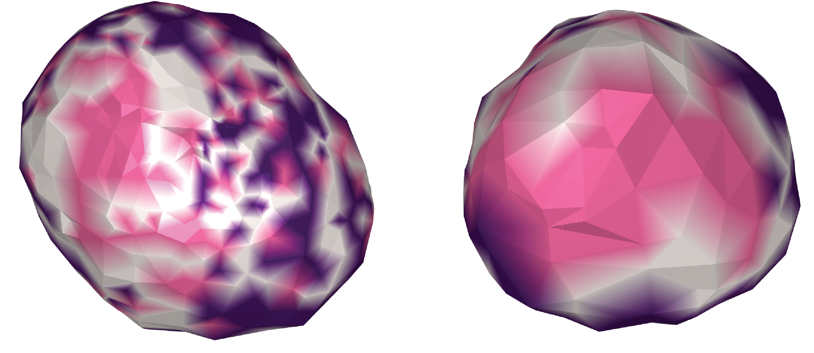
Conclusion
This project proposes using a modified Flowshape analysis pipeline to investigate similarities and differences between C. elegans embryonic cells. Mean shape can be easily estimated using spherical harmonics which can then be used to compare different shapes and find outliers of interest. I would like to extend this project by automating and improving the segmentation pipeline (either via SDT-pics or machine learning algorithms), and finding ways to extract more data points from shape comparisons.